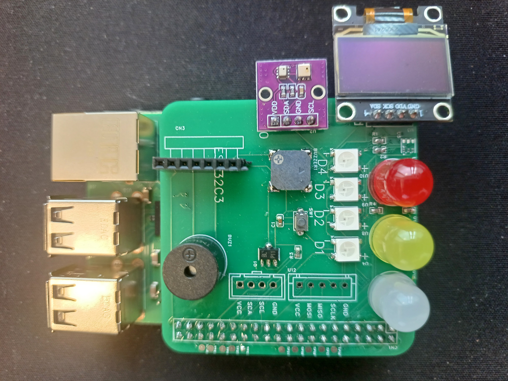

제조 현장의 현실
지금도 사람이
직접 확인하고 계신가요?
01
설비 고장 = 사후 대응
원인 찾느라 반나절
02
환경·품질 = 육안·수기
누락 · 지연 · 피로
03
스마트공장 = 비용 부담
수천만원의 벽
04
"디지털은 전문가의 일"
시도조차 못 함
해답
비전공 직원도, 자기 손으로.

Pi
라즈베리파이
손바닥만 한 진짜 컴퓨터
Kit
UTTEC 실습 키트
센서·LED·무선 일체 (자체 제작)
AI
AI
막힘을 스스로 해결하는 조력자
百見不如一習
백 번 보는 것보다, 한 번 직접 익히는 것
듣고 보는 교육을 넘어,
직접 익히는 교육
5주 · 20시간
직접 만드는 미니 스마트팩토리
1주차
라즈베리파이와 친해지기
첫 프로그램·자신감
2주차
공장의 눈과 귀
온습도 센서 → 화면 표시
3주차
자동 경보 시스템
기준값 넘으면 자동 경보
4주차
스마트폰 원격 모니터링
웹 대시보드 · 무선(LoRa)
5주차
AI 미니 스마트팩토리
AI 인식 + 통합 완성
이 교육이 남기는 것
끝나도 남고, 계속 자란다
①
자신감 — "나도 만들 수 있다"
비전공자의 디지털 진입장벽 제거
②
자산 — 현업에 남는 나만의 기록
현업 노트 + 실습 키트를 수료 후 그대로
③
성장 — AI로 스스로 계속 배운다
막히면 AI에게 물어 스스로 해결
용인 3차 · 수강생 16명 검증 완료
이제, 광주에서 시작합니다
직접 만들고 · 현업에 남기고 · AI로 성장하는 교육
광주경제진흥상생일자리재단 귀중
UTTEC · 광주 AI·IoT 스마트팩토리 실습 과정 (가칭)